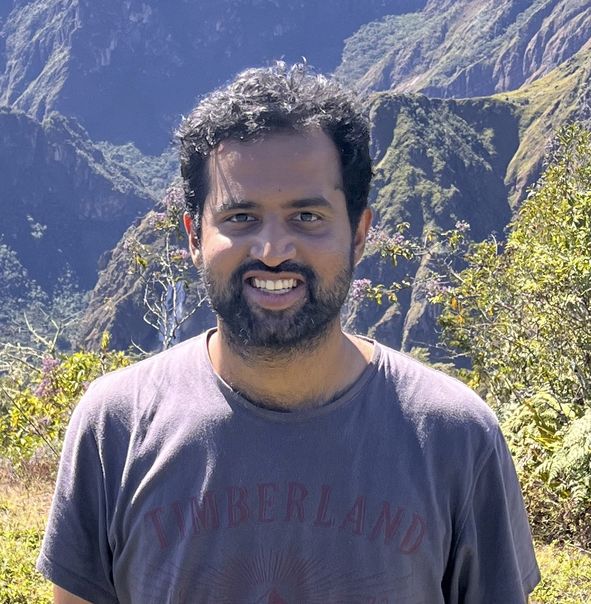

|
 |
Yeshwanth Cherapanamjeri |
Optimal Algorithms for Linear Algebra in the Current Matrix Multiplication Time
Yeshwanth Cherapanamjeri, Sandeep Silwal, David P. Woodruff, Samson Zhou
SODA 2023
What Makes A Good Fisherman? Linear Regression under Self-Selection Bias
Yeshwanth Cherapanamjeri, Constantinos Daskalakis, Andrew Ilyas, Manolis Zampetakis
In Submission [ArXiv]
Estimation of Standard Auction Models
Yeshwanth Cherapanamjeri, Constantinos Daskalakis, Andrew Ilyas, Manolis Zampetakis
Extended Abstract at EC 2022 [ArXiv]
Uniform Approximations for Randomized Hadamard Transforms with Applications
Yeshwanth Cherapanamjeri, Jelani Nelson
STOC 2022 [ArXiv]
Terminal Embeddings in Sublinear Time
Yeshwanth Cherapanamjeri, Jelani Nelson
FOCS 2021 [ArXiv]
Adversarial Examples in Multi-Layer Random ReLU Networks
Peter L. Bartlett, Sébastien Bubeck, Yeshwanth Cherapanamjeri
NeurIPS 2021 [ArXiv]
A single gradient step finds adversarial examples on random two-layers neural networks
Sébastien Bubeck, Yeshwanth Cherapanamjeri, Gauthier Gidel, Rémi Tachet des Combes
NeurIPS 2021 (Spotlight) [ArXiv]
On Adaptive Distance Estimation
Yeshwanth Cherapanamjeri, Jelani Nelson
NeurIPS 2020 (Spotlight) [ArXiv]
Optimal Robust Linear Regression in Nearly Linear Time
Yeshwanth Cherapanamjeri, Efe Aras, Nilesh Tripuraneni, Michael I. Jordan, Nicolas Flammarion, Peter L. Bartlett
In Submission [ArXiv]
List Decodable Mean Estimation in Nearly Linear Time
Yeshwanth Cherapanamjeri, Sidhanth Mohanty, Morris Yau
FOCS 2020 [ArXiv]
Optimal Mean Estimation without a Variance
Yeshwanth Cherapanamjeri, Nilesh Tripuraneni, Peter L. Bartlett, Michael I. Jordan
Extended Abstract at COLT 2022 [ArXiv]
Algorithms for Heavy-Tailed Statistics: Regression, Covariance Estimation, and Beyond
Yeshwanth Cherapanamjeri, Samuel B. Hopkins, Tarun Kathuria, Prasad Raghavendra, Nilesh Tripuraneni
STOC 2020 [ArXiv]
Fast Mean Estimation with Sub-Gaussian Rates
Yeshwanth Cherapanamjeri, Nicolas Flammarion, Peter L. Bartlett
COLT 2019 [ArXiv]
Testing Markov Chains without Hitting
Yeshwanth Cherapanamjeri, Peter L. Bartlett
COLT 2019 [ArXiv]
Thresholding based Efficient Outlier Robust PCA
Yeshwanth Cherapanamjeri, Prateek Jain, Praneeth Netrapalli
COLT 2017 [ArXiv]
Nearly Optimal Robust Matrix Completion
Yeshwanth Cherapanamjeri, Kartik Gupta, Prateek Jain
ICML 2017 [ArXiv]